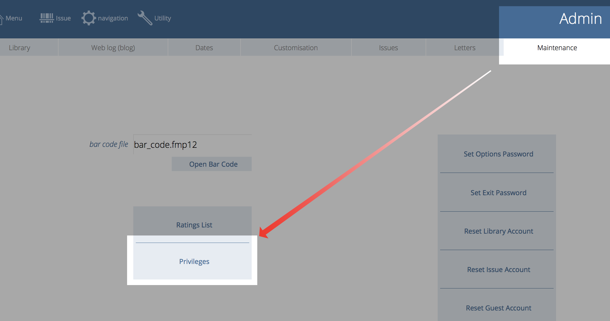

Types
Borrower types define sets of issuing privileges which are applied to (groups) of borrowers. They determine:
- how many items a borrower is allowed to have out at any one time;
- potentially how many items of a particular privilege1 that borrower may have;
- whether the borrower is allowed to borrow items when they have overdue items;
- whether the borrower is allowed to borrow when they have outstanding fees;
- how many renewals (or loan extensions) may be made;
- how many reserves the borrower of that type may make;
- the latest due date for borrowers of that type;
- the "level" used for borrowers compared against items that are restricted issue by level2
You can be strict of flexible in your settings. For example, you may:
- allow juniors to borrow up to 3 books at any one time, up to 2 of which may be junior fiction and up to 3 non-fiction, for a period of 7 days.
- allow a senior may be able to borrow up to 9 books, up to 4 of which fiction, up to 4 graphic novel, up to 1 anime, and up to 7 non-fiction, for 14 days.
For added control, an individual catalogue item’s privileges can override the borrower’s privileges. This means that a particularly popular book may have a maximum issue period of 7 days, which means that even if a senior (from the example above) borrows the book, its issue duration is 7 days, and not 14 days.
Or, you may choose not to exercise such levels of control, in which case you can set up simple privileges for borrower types.
List Types
Press the "t" keyboard shortcut at the main menu, or if you have configured your main menu to show the "Type" button, click that.
Clicking the gear widget reveals the detail for the selected type:
Create New Types
You may have as many or as few types as you need.
Click New Type button to create a new type. Enter the Name, the maximum number of days and items for that type (you can change these later, of course).
Detail
Click on the gear widget for the type.
The maximums for the type are shown along with a list of borrowers assigned that type.
The fields are:
| Key | Function |
|---|---|
| 1 | Menu (go here if you are lost) |
| 2 | Search |
| 3 | Issue |
| 4 | Return |
| 5 | Extend |
| 6 | Check |
| a | Admin screen |
| b | Borrower list |
| c | Catalogue: either Title or Copies list depending upon the setting in admin |
| d | When viewing the title or borrower lists, will take you to the detail view of the current record |
| f | Fees list |
| h | Issue History |
| i | Circulation list |
| m | MARC |
| n | Show navigation menu |
| p | catalogue coPies list |
| q | QuickMARC |
| r | Catalogue archive list |
| t | Title list or Borrower types depending upon the setting in admin |
| u | Navigates to utility screens in some modules and the audit layouts when you are in the admin module |
| w | Resets the Athenaeum windows according to your preferences and tries to position them in line with the main window (this only works on the main menu and admin) |
The lists of privileges (Senior Fiction, Fiction, etc.) are taken from your pre-defined list of privileges.
Defining Privileges
The privileges that appear in the the detail popover window are defined once in the Admin module. You might add privileges later, though it is anticipated the list is reasonably static.
Go to Admin->maintenance and click the privilege button:

The list of currently defined privileges is displayed:
Click the "New" button to add a blank privilege and give it a unique name.
Click the pale "x" to the right of the privilege to delete a privilege. Athenaeum then checks whether the privilege is used by any type. If not, then you are prompted to confirm the deletion. If it is used, you may not delete the privilege.
Click the "Close" button to close the privileges window.
Athenaeum (26 and above) allow any number privileges. Earlier versions of Athenaeum were restricted to seven privileges whose names could not be changed.
-
You may define as many privileges as you see fit, giving them appropriate names. ↩
-
This is a plain number and the numbering system is arbitrary for your installation. So if you have a Year 11 borrower type, for example, you might set the level to just 11. Then if you have items that are only to be borrowed by levels 11 or higher, then that title will have 11 entered against it. ↩